最近食べたものを覚える
麺・ごはん、肉・魚・卵豆腐、和・洋・中が続かないように提案。週間ボードの下には「🍖肉×3 🐟魚×2 🥬野菜たっぷり6種」のバランスも1行で出ます。
一昨日パスタなら、今日はごはんもの。
ベータ版・ぜんぶ無料公開中（登録不要）
「今日なに食べる？」を、もう考えない。
あなたの好みと、好きなYouTube動画から。 最近食べたものとふたりの「また食べたい」周期を覚えて、 買い物の日までの夜ごはん・買い物・調理までつなげます。
🎁 ベータ版参加者だけの特典
いまは全機能が完全無料。さらにアプリ内で感想・改善の意見を送ってくれた方に、正式版で使える「リピごちプラス 3か月無料」招待コードをお贈りします。
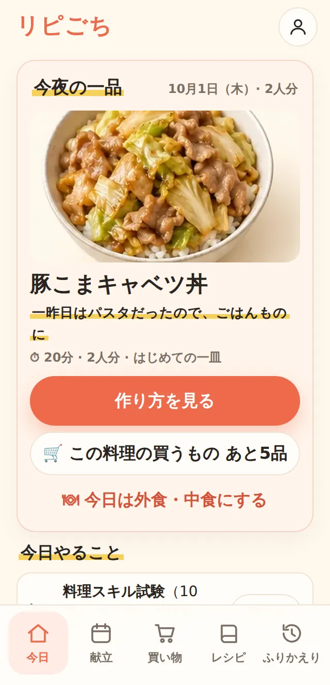

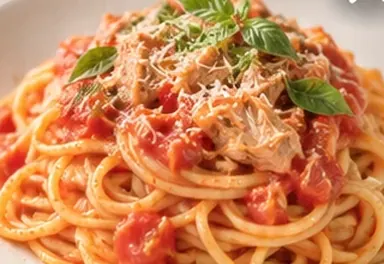
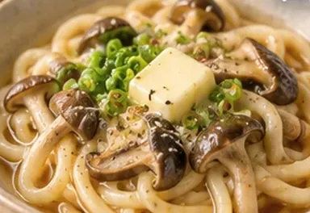
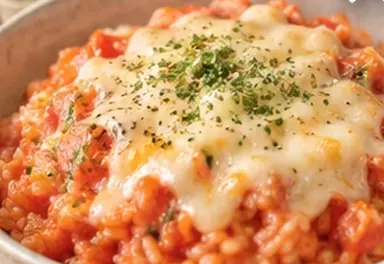
最初から入っている定番38品＋毎日集まるYouTubeの新着・みんなの定番（時短8割）。
麺・ごはん・おかず、和・洋・中をバランスよく巡って、飽きない一週間に。写真はイメージです
よくある夜のおはなし
平日の19時。仕事帰りのスーパーで、スマホを片手に立ち止まる。
「今日なに食べたい？」と送ってみても、返ってくるのは「なんでもいい」。
迷った末に、いつもの材料をかごへ。急いで作って、テーブルに出したとたん――
「え、それおとといも食べたよ。」
悪気のない、ひと言。でも、ちょっとだけ、しゅんとする。
ほんとうは、「おいしい！」って顔が見たかっただけなのに。
何をいつ食べたかなんて、忙しい毎日で覚えていなくていい。
それは、リピごちが覚えておきます。
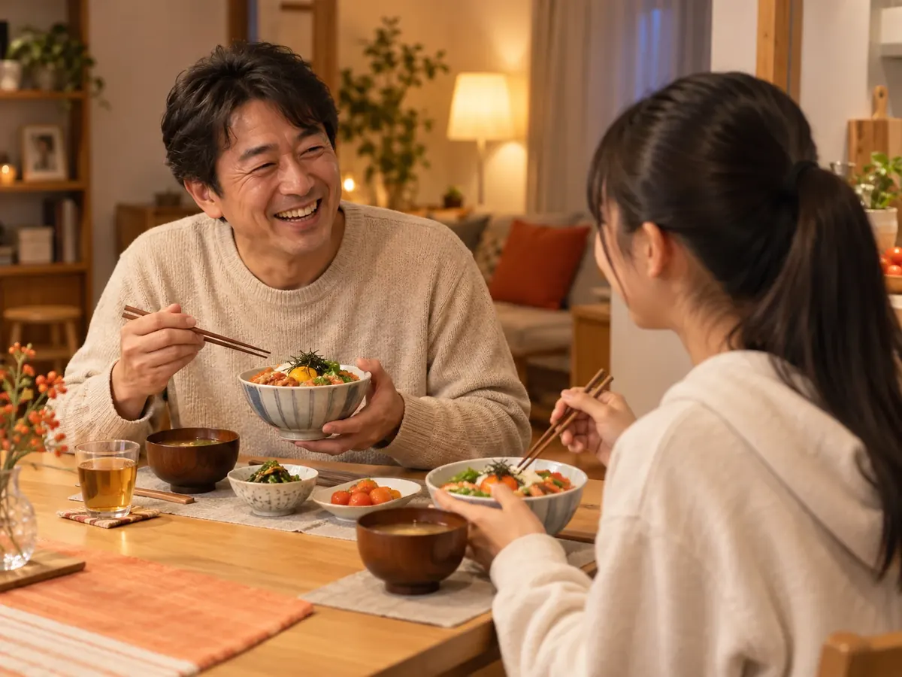
リピごちが覚えること
麺・ごはん、肉・魚・卵豆腐、和・洋・中が続かないように提案。週間ボードの下には「🍖肉×3 🐟魚×2 🥬野菜たっぷり6種」のバランスも1行で出ます。
一昨日パスタなら、今日はごはんもの。
食後にひとり1タップ。「😍明日でも」「😋毎週」「🙂月2回」から選ぶだけで、ふたりの重なる好物も、片方だけの好物も、順番に食卓へ。
好みの違いも、ごちそうに。
好きな料理は飽きる前、恋しくなった頃に「ふたりの好物・8日ぶり」と理由つきで再登場。4週間で「わが家の定番」が回り始めます。
久しぶりの、あの味。
深いパーソナライズ
よくある固定タイプの診断で終わりません。平日のしんどいことや、「好きなのにあまり作らない理由」をひとつずつ聞き返し、本人が「👍 合ってる」と確かめたことだけを献立の加点に使います。
家族に見せる範囲も、自分の端末で自由に選べます。
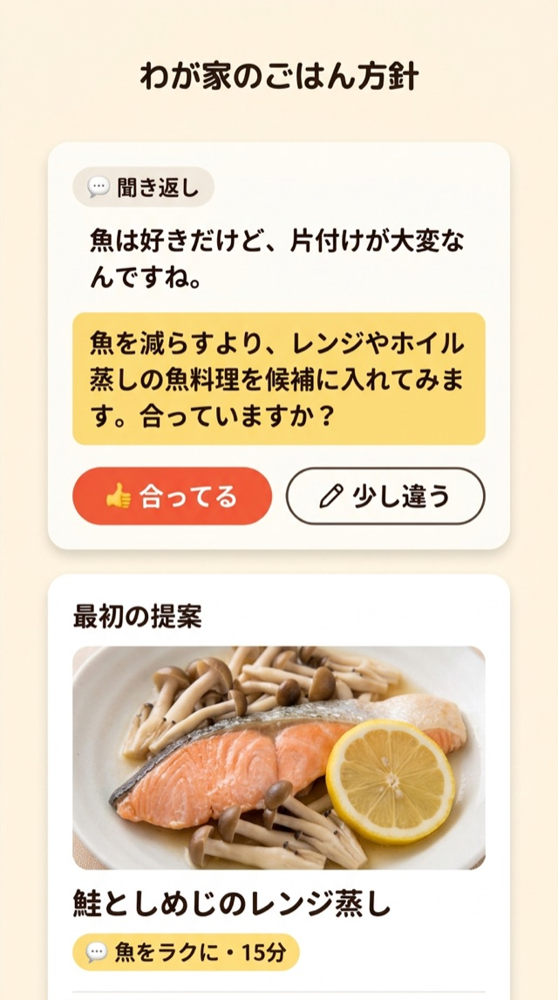
ほかのレシピアプリとのいちばんの違い
お肉を触っている時や、洗い物の途中でもスマホに触らなくて大丈夫。保存したYouTube動画を、手順ごとのループ再生とハンズフリー操作でナビゲートします。
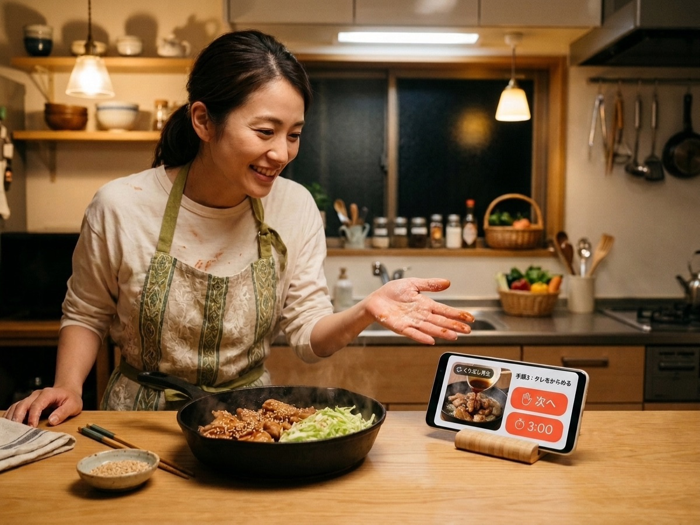
いま作っている手順の開始秒から終了秒までを自動でくり返し再生。ズレていたら「⏪-5秒」「📍ここ」「+5秒⏩」で1タップ微調整できます。
巻き戻しの手間がゼロに。
カメラに手をかざす（✋次へ・✌️戻る・👍タイマー）か、声で「次へ」「タイマー」「材料」と言うだけ。手首でポンと押せる64px特大ボタンも。
映像も音声もサーバーへ送りません。
長い動画の説明も、AIが「何を・どうする」がすぐ頭に入る手順に整理。その手順で使う材料と「🥣 A（合わせ調味料）」がすぐ下に出ます。
画面を行ったり来たりしない。
手順の「3分」を押すだけでタイマー開始。止めるまで優しいベルが鳴り続け、焦げつきを防ぎます。主菜の日には「🍚 ごはん炊いた？」の確認も。
うっかり炊き忘れも防止。
つかいかた
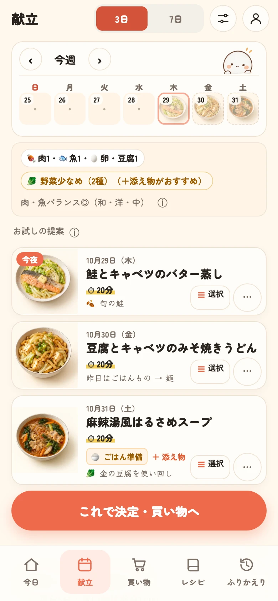
「平日5日（おすすめ）」「3日＋3日」「3日」「1週間まとめて」からリズムと始める曜日を選ぶだけ。人数・調理時間・器具・料理スキルに合わせて、次の買い物までの献立を提案します。おかず単体の日には、火を使わない3分添え物（冷奴・わかめスープ・ちぎりキャベツ等）も1タップで追加できます。
主菜・野菜の種類・気分バランスも1行でひと目。
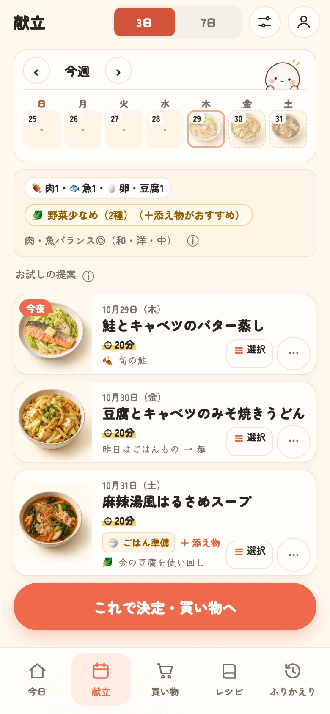
確定した献立の材料だけを、スーパーを回る売り場順に1行ずつ。「鶏もも肉 1枚＋150g → 約400g（目安: 2枚）」「豆腐 3/4丁（目安: 1丁）」「卵 8個（目安: 1パック）」のように異なる単位も自動で合算・パック換算します。後半の日に使う傷みやすい食材には「その前に買うと安心（あとで買う）」の案内も。
一度「家にある」を押した調味料は、常備品として記憶。
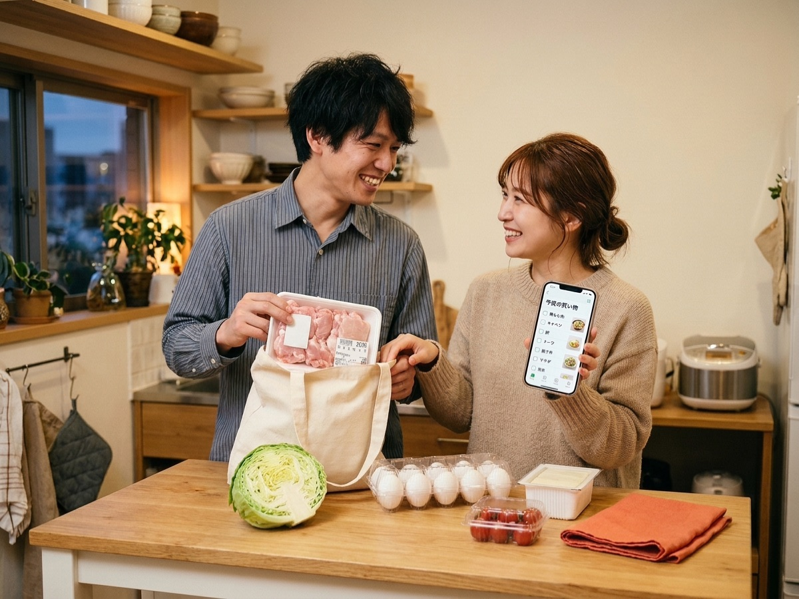
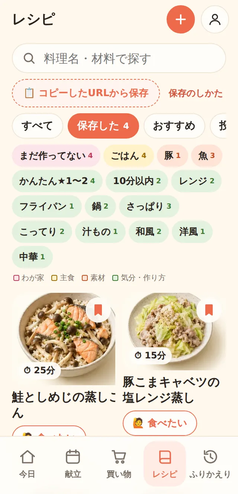
YouTubeで見つけた「これ作りたい！」も、URLを貼るだけでリピごちのレシピカードに。いつもの献立候補に自動で混ざります。
見るだけだった保存フォルダが、明日の食卓に。
作ったら「ごちそうさま！」カードで、ひとりずつ「次はいつ食べたい？」の絵文字チップを1タップ（または1周終えてまとめて評価）。2回作ると「🏆 わが家の定番」入り！回数に応じて「🌱 もうすぐ定番」→「🏆 定番」→「⭐ 常連」→「👑 殿堂」へと育ち、月の食卓カレンダーから「🔁 もう一度、献立に入れる」もすぐ押せます。
作るたびに経験値がたまり、バッジや昇級試験も。
登録不要・スマホのブラウザですぐ開きます
続けられる工夫
「今日は外食・中食」をワンタップ。買ってあった料理は1日ずつ後ろへずれるか、次の自炊日へ持ち越せるので材料をむだにしません。
たまには、息抜きも大事。
もやし・葉もの・魚介などは買い物のすぐあとの日に。キャベツ・大根・豆腐など余りやすい食材は同じ週で自然に使い回します。
冷蔵庫の奥で、しなしなにしない。
「生姜焼き」などのフォルダに、お気に入りのレシピを複数入れて食べ比べ。順位をつけたり、「毎週火曜は明太子パスタ」も。
わが家の「いちばん」が見つかる。
晩ごはんを作ると経験値とバッジ。昇級試験に受かると、作れる料理が献立に増えていきます。
昨日の自分より、ちょっと上手に。
おかず単体の献立には「🍚 ごはん準備」マークと、火を使わない3分添え物（冷奴・わかめスープ等）の1タップ追加。材料は買い物リストへ自動合算されます。
主菜1品でも、迷わず一汁二菜に。
家に残った食材を選んで未確定の日だけ組み直し。条件が厳しい時は「平日15分→20分（＋3品）」のように増える品数をボタンで表示します。
アレルギーや苦手は絶対に広げません。
ふたりで使う
献立・レシピ・買い物リストのチェックが、もうひとりのスマホにもリアルタイムで反映。相手のアカウント登録はいりません。
2人でスーパーを二手に分かれても快適。
見るだけの家族も2問で参加でき、食べたい料理や「この日を変えたい」をワンタップでリクエスト。買い物の前なら献立の最優先に入ります。
「なんでもいい」から卒業。
「◯日に買い物に行く予定。変更のリクエストはそれまでに！」を、そのままLINEへ。お互いが見せた「ごはん方針」も献立に反映されます。
締め切りがあると、決めやすい。
10問の腕試し（登録不要）
計量・火加減・衛生から、揚げ物・魚のおろし方まで。正解すると難しく、まちがえるとやさしくなる4択10問で、1000点満点のスコアと階級・★1〜5がわかります。リピごちは、その腕前で作れる料理だけで献立を組みます。
10問の試験を受けてみる1問ごとに解説つき。結果は「レンジ名人」から「台所マイスター」までの5段階。
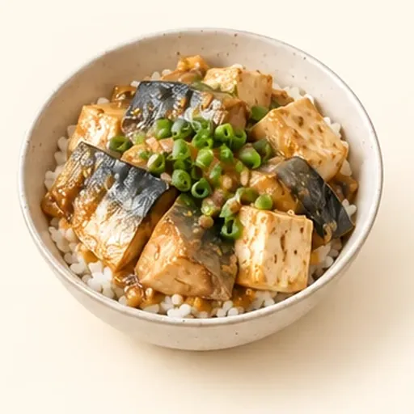
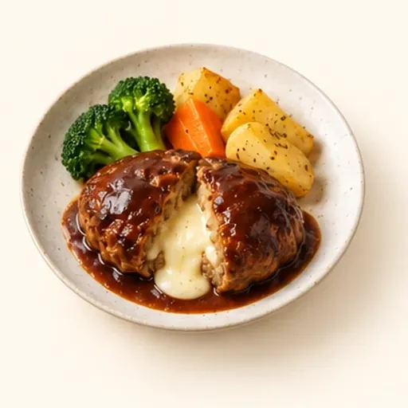
ごはん方針の画面からいつでも
ふだんの1週間の夜ごはん、主食、ついいくお店、大事にしていること。4問に答えると、8つのキャラクターからあなたの夜ごはんタイプと、火力・時短・節約などの能力チャートがわかります。
ベータ版ではじめてみるたのしむためのおまけ診断です。献立の条件を勝手に変えることはありません。
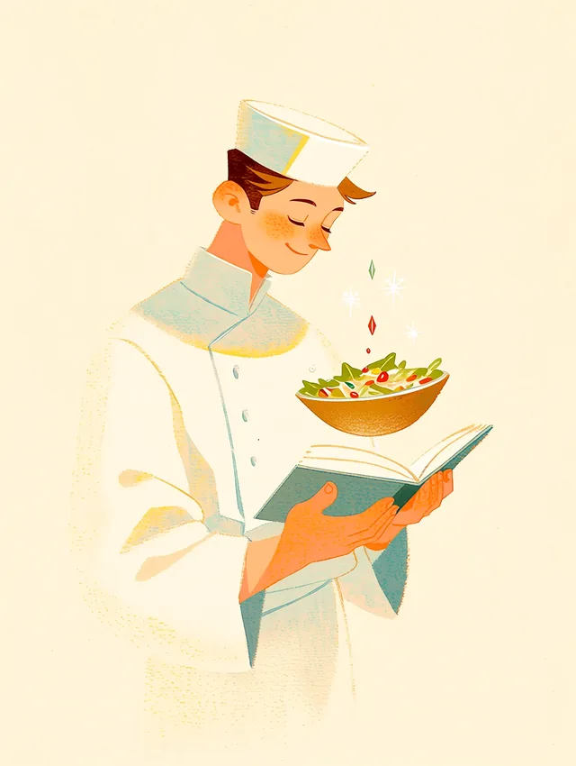
いま参加するメリット
ベータ期間中はすべての機能が無料。さらにアプリから改善の意見を送ってくれた方に、正式版で使える「リピごちプラス 3か月無料」招待コードをお贈りします。
メールもパスワードも不要ですぐ使えます。設定の「データの保護状態」から1タップでバックアップ保存やGoogleログイン引き継ぎ（iPhoneホーム画面版対応）も可能です。
料理モードの✋手の形認識や🎙️音声操作、腕前診断の料理写真はリピごちのサーバーに送信・保存しません。わが家のごはん方針も端末ごとに守られます。
レシピと記録の書き出し（バックアップ）は、プランにかかわらずいつでも無料でできます。
正式版の予定（いまのベータ版はすべて無料です）
4週 600円（税込・予定）
1週間あたり150円。
ペットボトル1本より安い。
チケットを4週で24枚以上使うなら、プラスの方がおトク。
価格と内容は予定で、変わることがあります。始める前に必ずお知らせし、お申し込みなしに課金することはありません。
メールでのお知らせ（任意）
いまはブラウザから登録なしでベータ版を使えます。「正式版の公開日や大型アップデートをメールでも受け取りたい」という方は、こちらからご登録ください。
はい！いま公開しているベータ版は、メールアドレスやパスワードの登録なしで、すべての機能を無料でお使いいただけます。さらにアプリ内で感想や改善の意見を送ってくださった方には、正式版で使える「リピごちプラス 3か月無料」の招待コードをプレゼントしています。
YouTube動画の「共有 → リンクをコピー」をして、リピごちのレシピ画面（または献立の入れ替え画面）に貼るだけです。まずは無料で動画の説明欄からAIが材料・作り方・何人分・手順の時刻を読み取ります。説明欄に作り方が書かれていない動画でも、無料配布されるチケット（初回10枚＋作るたびに配布）を1枚使って、動画の映像と音声からAIが手順を書き出せます。また、毎日自動で集まる「新着・みんなの定番（時短8割）」からもワンタップで献立に入れられます。
はい。✋手の形での操作は、お使いの端末（ブラウザ）の中だけで手の形を判定し、カメラの映像を外部のサーバーへ送信・保存することは一切ありません。🎙️声での操作もブラウザ標準の音声認識（端末内処理優先）を利用し、リピごちのサーバーに音声が送信・保存されることはありません。
使えます。何人分（1〜5人以上）かを選ぶと、材料をその人数分に換算し、スーパーで買えるパック数や個数の目安も併記します。設定の「ふたりで使う」から招待リンクをLINE等で送れば、2秒で献立・買い物リストが同期され、家族それぞれの「また食べたい」周期や「ごはん方針」も献立に反映されます。「見るだけ」で参加して食べたいものをリクエストする使い方もできます。
「今日は外食・中食にする」を押すと、買ってあった料理を1日ずつ後ろにずらすか、次の自炊日まで持ち越すかを選べます。また、献立タブの「🧺 家に残っている食材」から残った食材をタップすれば、まだ決めていない日の献立だけをその食材を使う料理へ組み直せます。
食べられない食材（アレルギー11品＋自由記入）と苦手な食材を設定すると、献立の候補から除外します。レシピに原材料の印がなくても材料名（豚こま→肉、鮭→魚、しょうゆ→小麦など）から推測して外し、候補が少ない時でも自動で条件をゆるめることはありません。ただし安全を保証するものではないため、調理時や市販品の原材料表示は必ずご自身でもご確認ください。
はい。iPhoneはSafari（またはChrome）の共有ボタンから「ホーム画面に追加」、Androidはブラウザのメニューから「ホーム画面に追加（アプリをインストール）」を選ぶと、ホーム画面から1タップで起動でき、通知も受け取れます。iPhoneのホーム画面版でGoogleログインが止まる場合も、Safariから安全に引き継ぐ専用機能を備えています。
基本はお使いの端末（ブラウザ）の中です。設定画面の「🛡 データの保護状態」カードから、いつでも1タップでバックアップファイルの保存や共有シート保存、家族共有、Googleアカウント連携ができます。
待機リストにご登録いただいたメールアドレスと人数は、リピごちの正式版公開のお知らせと開発状況のご案内にだけ使います。Googleフォーム（Google LLC）で管理し、第三者に販売・提供することはありません。配信停止は、お届けするメールに記載の方法でいつでもできます。
「また？」が、「また食べたい！」に。
登録なし・3分で「わが家のごはん方針」と最初の献立ができます。
無料でベータ版をはじめる🎁 ご意見送信で、正式版「リピごちプラス 3か月無料」招待コード進呈中